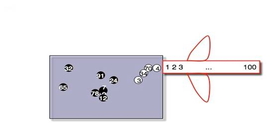
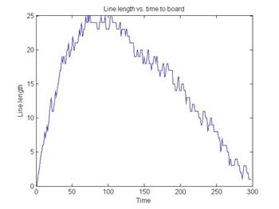
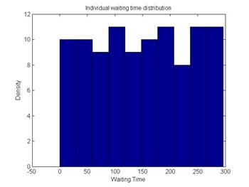
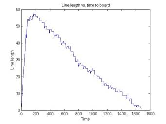
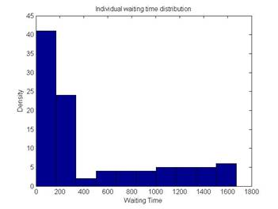

One hundred travelers are waiting in the passenger lounge of
the airport. When the airline agent at the gate announces that passengers may
begin to board the aircraft, people start forming the line at the gate. Our
model focuses on the line formation
mechanism, its impact on the distribution
of individual waiting times and evolution
of line preferences.
The key question that we ask is why,
when we assume that the objective of all passengers is to get inside the plane
as soon as possible, we observe that not all people rush to the line
immediately?
When we look at the dynamics in the waiting area more
carefully, there are usually some people who keep their seats until the queue
gets shorter. Some passengers stay seated while others tend to join the line
soon. Our model assigns a “line tolerance” parameter to every passenger at the
beginning of each boarding. Hence, a passenger's action - whether in the queue
or not - is determined by f(line
tolerance, number of people on the queue).
However, the overall waiting time is determined by the
ordering of agents as they enter the plane. The progression of line is slowed
down whenever passengers enter the plane in a “wrong” order – when a passenger
blocks seating of a passenger immediately behind. There is no explicit
coordination built into the model. The model was implemented in Matlab
and Python.

Agents:
Environment:
Procedure:
Initialization:
Process:
Note: the decision rule has the simple form: if g(line length) < line tolerance of agent i => join the line, otherwise stay seated, where in our case g(x)=x but g(.) can be any increasing function.
|
 |
 |
Mean waiting time = 150
|
 |
 |
Mean waiting time = 450
As a simple extension, we ask the question whether the passengers can evolve a line tolerance that would match their seating (if we assume this is constant across runs). We add a simple hill climbing rule - each period (airline boarding), each agent draws a new tolerance value. If it leads to shorter time, it keeps it otherwise returns to the old tolerance value.
So, could the group evolve socially optimal line tolerance that would "match" their seat assignment and optimize overall waiting time?
The result shows that they cannot. After 100 runs the mean waiting time and distribution did not change. The cause of the slowdown related to the “wrong” order is a pure negative externality. This result justifies an outside intervention.
The purpose of our model was to investigate the mechanism of line formation and its impact of the distribution of individual waiting times. Our results suggest that delays cause a bimodal distribution of waiting times. The model also shows that due to negative externality the decentralized agents do not have the capability to optimize the overall boarding time by matching their line tolerance with seat assignment. This indicates that outside intervention is justified and necessary.